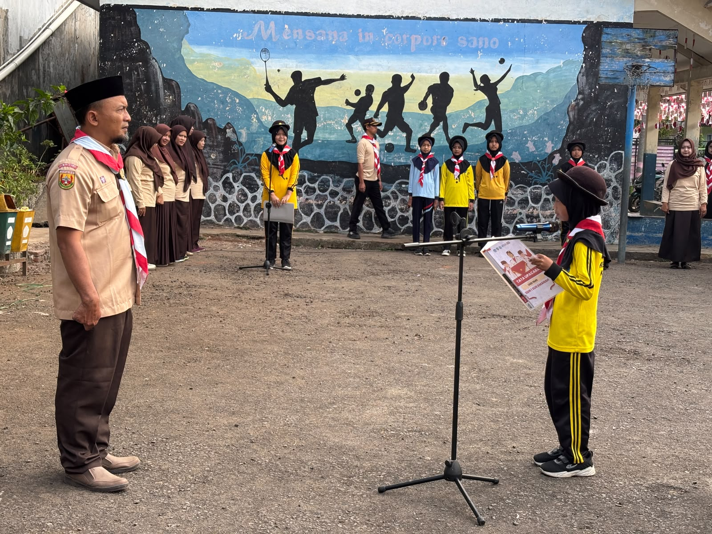
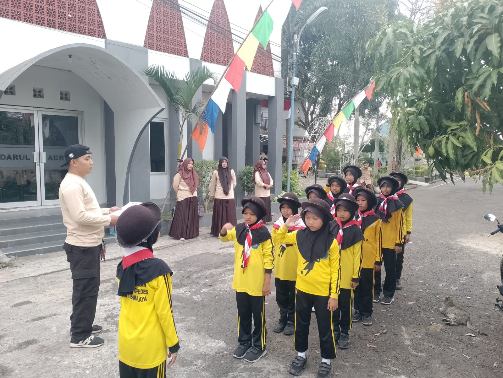
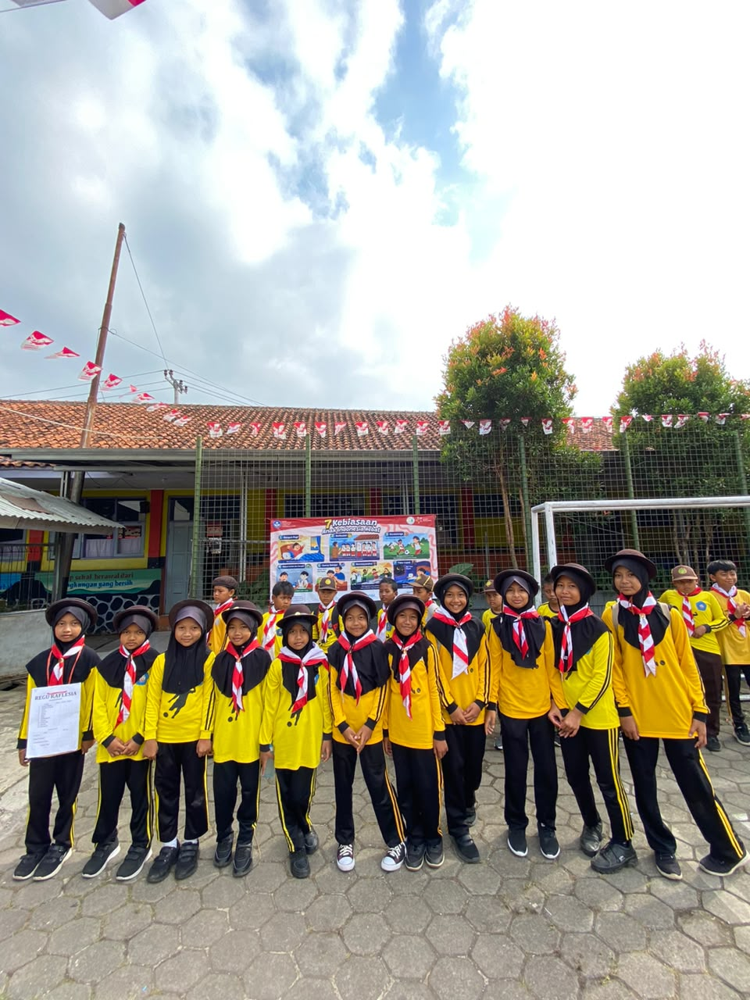
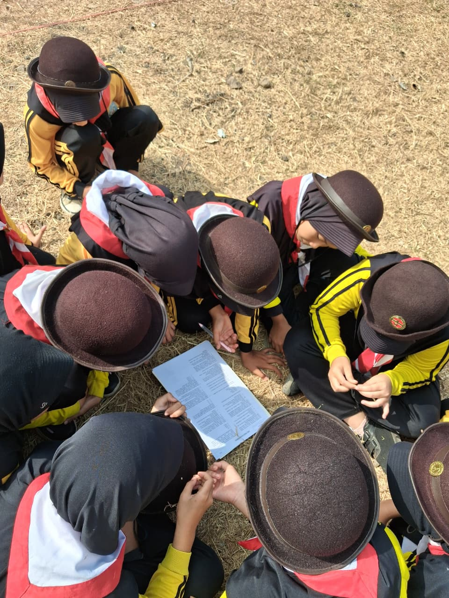
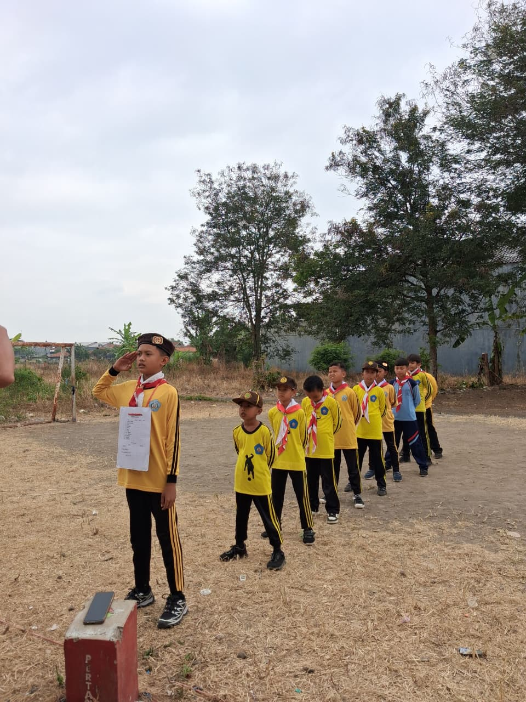
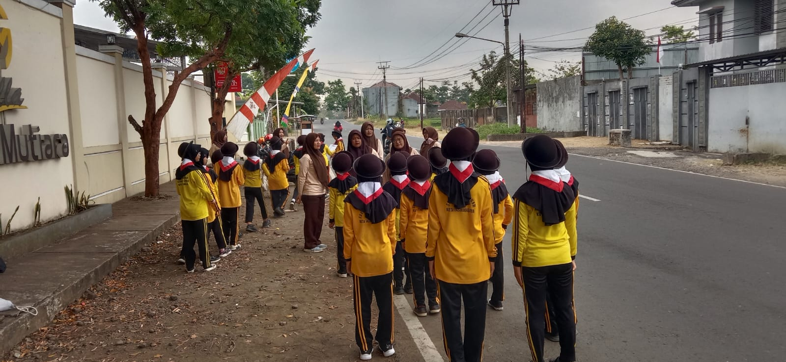
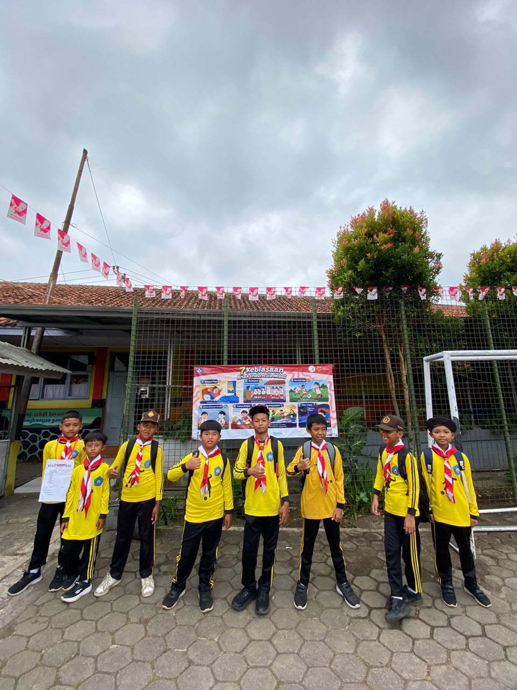

SDN 1 Sukamanah melaksanakan kegiatan Pramuka Penggalang pada Kamis, 13 Agustus 2026. Kegiatan berlangsung dengan penuh semangat dan diikuti oleh peserta didik dengan antusias.Kegiatan ini menjadi salah satu sarana bagi peserta didik untuk mengembangkan kedisiplinan, kemandirian, kerja sama, tanggung jawab, serta kecintaan terhadap kegiatan kepramukaan.
Melalui kegiatan Pramuka Penggalang, siswa diharapkan dapat belajar berbagai keterampilan sekaligus membangun karakter positif yang bermanfaat dalam kehidupan sehari-hari.






Kegiatan berlangsung dalam suasana tertib, aktif, dan menyenangkan. Seluruh peserta mengikuti kegiatan sesuai arahan pembina.
← Kembali